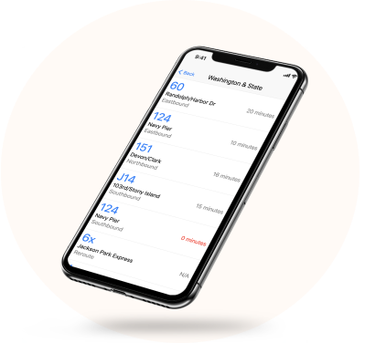
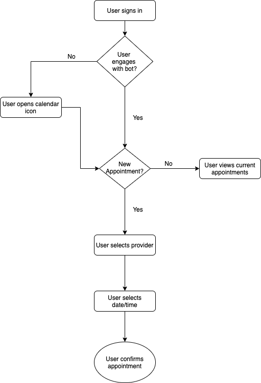

MedChat summary
Patient portal applications are the next step in providing wraparound services for those in the medical and mental health fields. They allow users to access information in a secure format from their personal devices. My goal was to take the current applications on the market, and redesign them to create a more user friendly experience. .
Presenting Problem:
Current patient portal applications feature homepages that are cluttered, confusing and fail to prioritize user flows.
The Solution:

Discovery Phase:
Before beginning the design process, I needed to gather information about how users felt about their current patient portal applications, the way they use them, and the features they would most like to see in future applications.
Competitive Analysis:
Google has many products to offer its users through its Drive platform. They have built-in templates for surveys, documents, spreadsheets, and presentations. They also provide several tools for users to edit content with.
Dropbox is available on multiple platforms, iOS, Android, and Office 365 applications. The application also has the option of administration control for business users.

Pinterest allows users to “Pin” images or ideas they find on websites to their boards. They also provide users with similar ideas to pins they have already chosen. Pinterest’s platform allows for endless scrolling.
View more
User Personas:
I was able to craft user personas based on the information gathered in the survey. Demographically, the respondents were majority female (80%), and aged between 25-54 (80%). Respondents reported living in smaller cities and towns, mostly in the southeastern United States. Most respondents reported their professions as being teachers, professors, students or therapists.
The first user persona is health-conscious and likes to make sure she’s on top of tests. She wants to be able to check her app for upcoming appointments and test results. She’s a bit frustrated that she can’t download or print her test results.
The second user persona represents a busy mom, who has several schedules that she needs to coordinate. This user also wants to be able to change profiles within any app to make appointments and check on messages for her children.
The third user persona is an older male. This user would like to be able to integrate the information from his weekly exercises into his medical app.
Information Architecture:
The user stories were created by gathering data from the user survey responses, the competitive analysis and the user personas. I compiled a list of tasks that MedChat users would want to complete and rated them from high to low priority. I used the high and medium priority level user stories as guides to create the user flows and the wireframes of the application.
 View more
View more
User Flows:
I created three user flows for the application:
- Process for logging in
- Process for signing up
- rocess for sending messages
- Process for making an appointments
- Process for checking test results


Sketches and Wireframes:
Combining information from my competitive analysis and my user surveys, I was able to outline what I would like my application to look like.
 View more
View more
Preference Tests:
I conducted a preference test for three different elements in my design. The first element was the background color for the log-in screen.The feedback that I recieved was that users preferred a neutral background to a white background. Users also preferred a Cinzel Decorative/Muli font pairing. Finally, users preferred wider width CTA buttons on the login and sign up pages.

83% of user preferred a the log-in screen with a neutral background compared to a log-in screen with a colored background.
Branding and Identity:
The overall style of MedChat is one that projects reliability, trustworthiness, and friendliness. As a patient-facing application, we want consumers to feel comfortable while using our product. The first logo that I designed was an attempt to use the “M” initial as the focal point of the logo. The second one I wanted to play off the fact that this was going to be primarily a messaging application, and I wanted that reflected in the branding. The third logo was a more abstract take on the messenger concept.

After receiving feedback, I decided to go with my second sketch.The base color used in most of MedChat’s products is Sacred Blue (#049DD9). This blue can be used in various shades. This color is accented by a strong royal blue, called Patient Purple (#0D2EDF). These colors convey a sense of calm and trustworthiness throughout the product.

Usability Tests:
The first round of usability tests I ran provided valuable feedback about the overall functionality of the website. I conducted this test with three users. Users said they would like to see where/how to add new templates, and if there are any more ways to move files aside from deleting them. Also, a reviewer suggested combining the landing page, pricing into a single page.
Mockups:
After the feedback from the usability tests, I was able to create high fidelity mockups of my final application.
View moreFinal Design:
View prototype
Conclusion:
Medchat offers users an intuitive application experience and provides an alternative to overcrowded and confusing homepages. Medchat presents an opportunity for providers and patients to benefit from easier communication.
Let's Connect
Please reach out if you want to chat or have any questions!
Message me